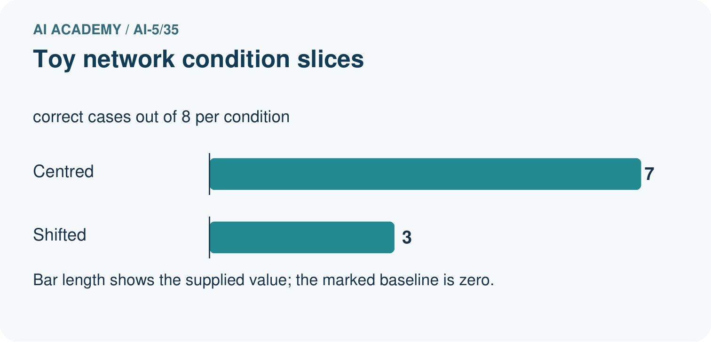
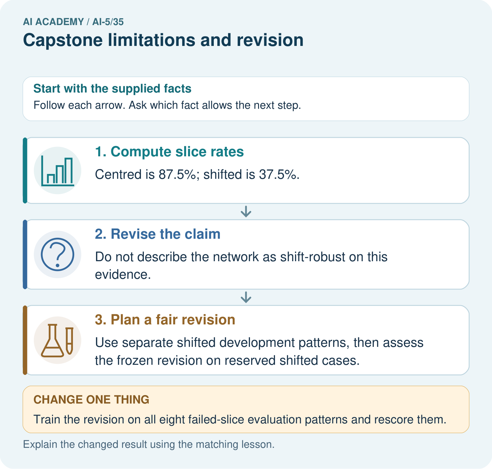
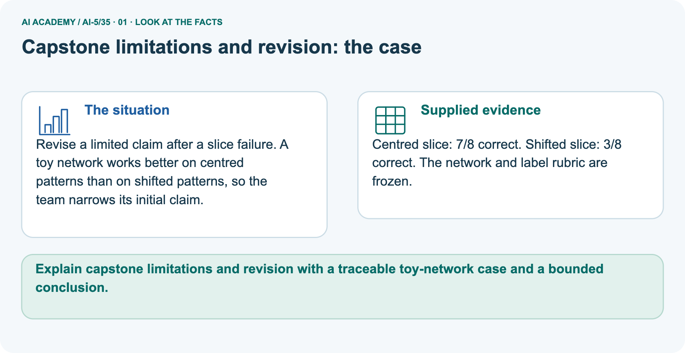
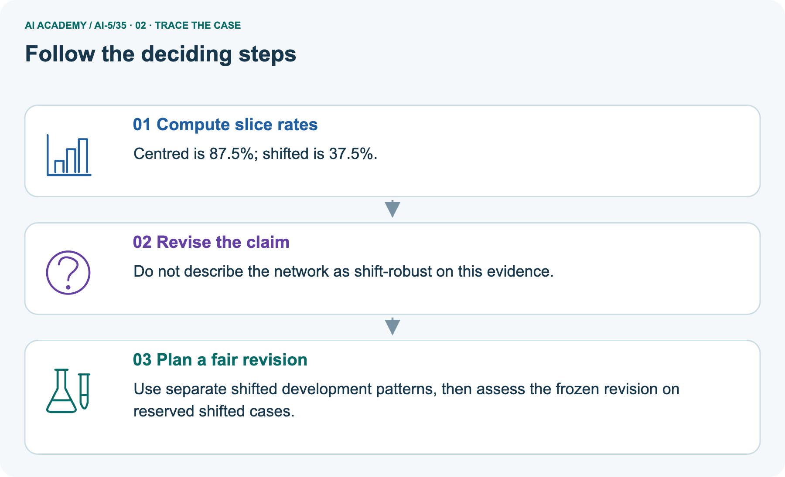
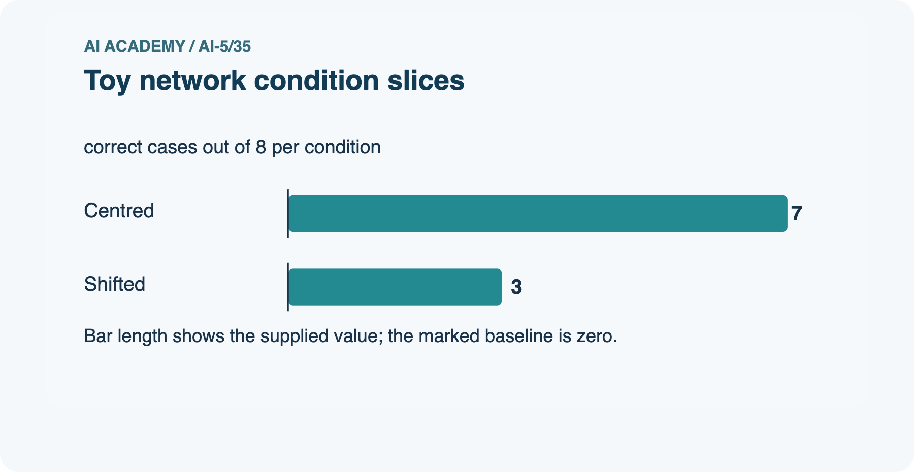
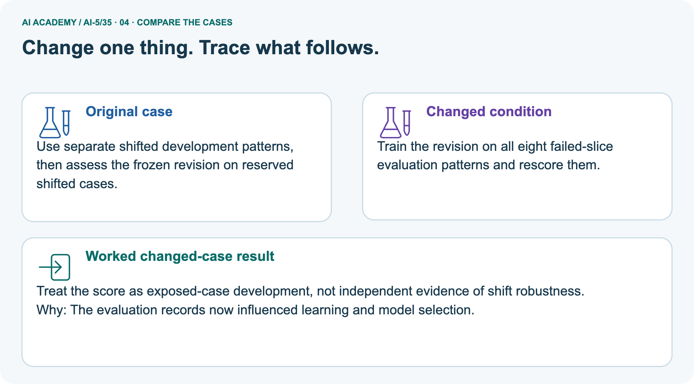
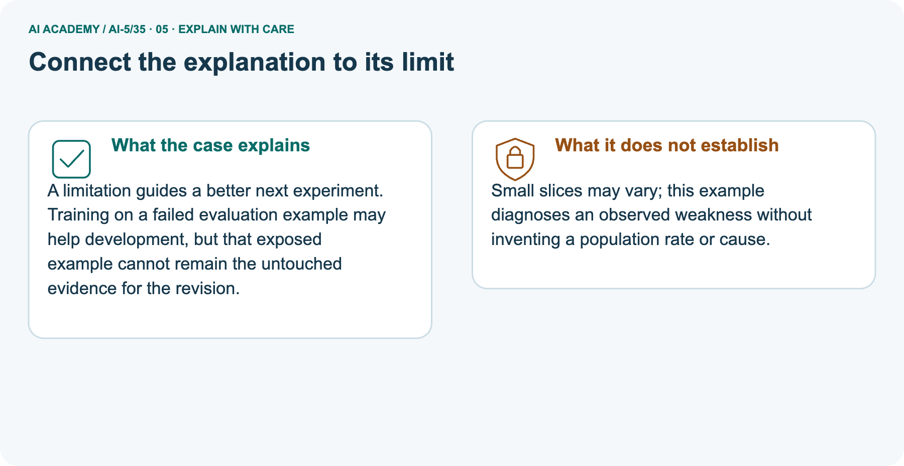
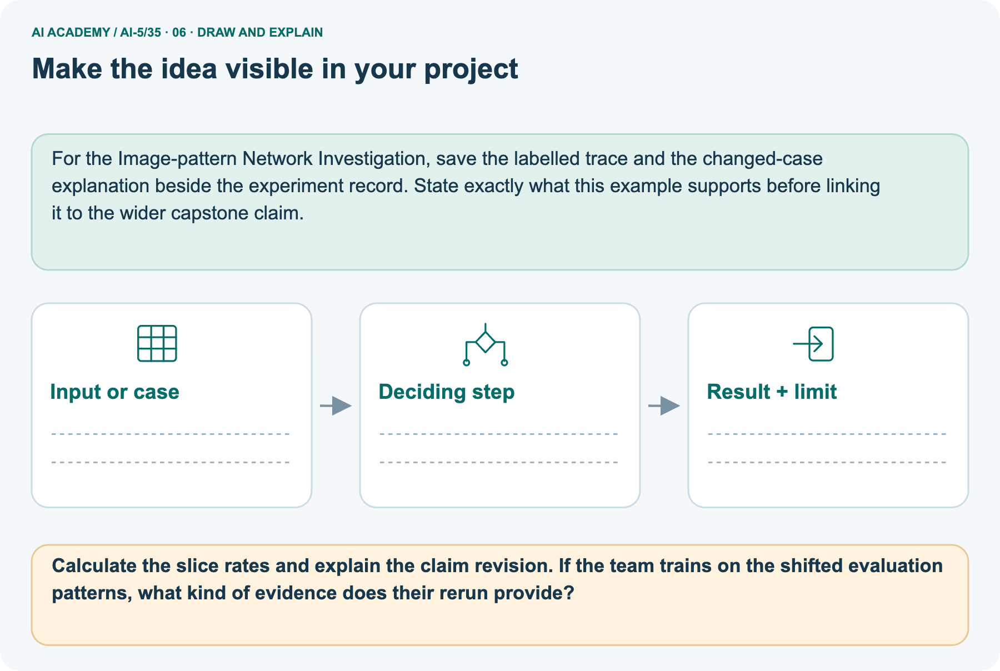

AI Academy · Level 5 · Grade 10 · Week 35 · Workbook
Capstone limitations and revision
Learn to understand, design, build, test and explain AI systems responsibly.
Project: Image-pattern Network Investigation
THE CONNECTED WEEK
One complete evaluation and revision record.
Keep frozen predictions, condition errors, original scores and proposed changes together.
Keep one habit: Recall → W1–W3/W5 → independent evaluation → project revision history → delayed return.
Main lesson · Section 1
Recall · Retrieve before notes
Keep this task’s inputs,rule and response together.
Complete task and evidence
Try the recall before opening notes. Then use a different colour or a labelled second line to correct your explanation.
Without opening the old lesson, explain one key idea from Capstone controlled experiments. Give an example and a mistake that the idea helps you avoid.
Without opening the old lesson, explain one key idea from Documenting a network experiment. Give an example and a mistake that the idea helps you avoid.
Without opening the old lesson, explain one key idea from Uncertainty and failure analysis. Give an example and a mistake that the idea helps you avoid.
Use this reference for the original W1–W3 and W5 exercises. The separately named independent case supplies its own changed facts; use those facts for that attempt before feedback.
Freeze the Week 34 candidate: max(0, a*x), initial a = 1, rate 0.2, two full-batch updates on (1,2),(2,4), no bias. The final weight is 2. The baseline is unchanged at a = 1.
Now open final rows F1=(5,10), F2=(6,12), F3=(-1,-2), F4=(-2,-4). These fictional rows deliberately include a condition absent from the positive training and validation inputs.
Opening them is an evaluation event, not permission to tune on them while retaining an independent-test claim.
Write raw predictions for both procedures before summarising. A low overall error can hide a systematic problem in a condition. These four constructed examples do not estimate prevalence or real-world performance.
Capstone controlled experiments
Documenting a network experiment
Uncertainty and failure analysis
Lesson reference for workbook practice
Main lesson · Section 5
W1 · Explain the current example
Keep this task’s inputs,rule and response together.
Complete task and evidence
Frozen main candidate ReLU(2x), baseline ReLU(x). Four constructed evaluation rows F1(5, 10), F2(6, 12), F3(−1, −2), F4(−2, −4). Baseline predictions 5, 6, 0, 0; residuals−5, −6, 2, 4; squares 25, 36, 4, 16; MSE 81/4=20.25. Candidate predictions 10, 12, 0, 0; residuals 0, 0, 2, 4; squares 0, 0, 4, 16; MSE 20/4=5.
Strict overall improvement passes; candidate positive-input MSE 0 on two cases, negative-input MSE 10 on two. ReLU output cannot be negative for any weight, so more epochs do not remove that representational limit. Separate supported x−3, target−6: ReLU(2x)0, residual 6, square 36; signed 2x gives−6, error 0 on a revealed case.
Signed output is a proposed architecture revision needing appropriate fitting/selection and new reserved final evidence. Preserve original MSE 5. Separate picture centred 7/8=87.5%, shifted 3/8=37.5%; training on exposed shifted evaluation cases turns their later scores into development checks, not independent robustness evidence. Published cases already seen during choices are teaching/exposed cases.
For F1–F4 calculate candidate residuals and squared errors.
Main lesson · Section 6
W2 · Trace the calculation
Keep this task’s inputs,rule and response together.
Complete task and evidence
Frozen main candidate ReLU(2x), baseline ReLU(x). Four constructed evaluation rows F1(5, 10), F2(6, 12), F3(−1, −2), F4(−2, −4). Baseline predictions 5, 6, 0, 0; residuals−5, −6, 2, 4; squares 25, 36, 4, 16; MSE 81/4=20.25. Candidate predictions 10, 12, 0, 0; residuals 0, 0, 2, 4; squares 0, 0, 4, 16; MSE 20/4=5.
Strict overall improvement passes; candidate positive-input MSE 0 on two cases, negative-input MSE 10 on two. ReLU output cannot be negative for any weight, so more epochs do not remove that representational limit. Separate supported x−3, target−6: ReLU(2x)0, residual 6, square 36; signed 2x gives−6, error 0 on a revealed case.
Signed output is a proposed architecture revision needing appropriate fitting/selection and new reserved final evidence. Preserve original MSE 5. Separate picture centred 7/8=87.5%, shifted 3/8=37.5%; training on exposed shifted evaluation cases turns their later scores into development checks, not independent robustness evidence. Published cases already seen during choices are teaching/exposed cases.
Compute both overall MSE values and the candidate negative-input MSE. Apply the strict final criterion.
Main lesson · Section 7
W3 · Repair a misconception
Keep this task’s inputs,rule and response together.
Complete task and evidence
Frozen main candidate ReLU(2x), baseline ReLU(x). Four constructed evaluation rows F1(5, 10), F2(6, 12), F3(−1, −2), F4(−2, −4). Baseline predictions 5, 6, 0, 0; residuals−5, −6, 2, 4; squares 25, 36, 4, 16; MSE 81/4=20.25. Candidate predictions 10, 12, 0, 0; residuals 0, 0, 2, 4; squares 0, 0, 4, 16; MSE 20/4=5.
Strict overall improvement passes; candidate positive-input MSE 0 on two cases, negative-input MSE 10 on two. ReLU output cannot be negative for any weight, so more epochs do not remove that representational limit. Separate supported x−3, target−6: ReLU(2x)0, residual 6, square 36; signed 2x gives−6, error 0 on a revealed case.
Signed output is a proposed architecture revision needing appropriate fitting/selection and new reserved final evidence. Preserve original MSE 5. Separate picture centred 7/8=87.5%, shifted 3/8=37.5%; training on exposed shifted evaluation cases turns their later scores into development checks, not independent robustness evidence. Published cases already seen during choices are teaching/exposed cases.
Why cannot extra training alone make this ReLU output negative? Name a proposed change and the evidence it would require.
Main lesson · Section 9
W5 · Explain the limitation
Keep this task’s inputs,rule and response together.
Complete task and evidence
Frozen main candidate ReLU(2x), baseline ReLU(x). Four constructed evaluation rows F1(5, 10), F2(6, 12), F3(−1, −2), F4(−2, −4). Baseline predictions 5, 6, 0, 0; residuals−5, −6, 2, 4; squares 25, 36, 4, 16; MSE 81/4=20.25. Candidate predictions 10, 12, 0, 0; residuals 0, 0, 2, 4; squares 0, 0, 4, 16; MSE 20/4=5.
Strict overall improvement passes; candidate positive-input MSE 0 on two cases, negative-input MSE 10 on two. ReLU output cannot be negative for any weight, so more epochs do not remove that representational limit. Separate supported x−3, target−6: ReLU(2x)0, residual 6, square 36; signed 2x gives−6, error 0 on a revealed case.
Signed output is a proposed architecture revision needing appropriate fitting/selection and new reserved final evidence. Preserve original MSE 5. Separate picture centred 7/8=87.5%, shifted 3/8=37.5%; training on exposed shifted evaluation cases turns their later scores into development checks, not independent robustness evidence. Published cases already seen during choices are teaching/exposed cases.
After inspecting F1–F4, a student changes to prediction 2*x and reports “new final MSE 0”. Explain the accurate label and the next evaluation step.
Main lesson · Section 4
Try alone · Selected transfer
Keep this task’s inputs,rule and response together.
Complete task and evidence
A frozen ReLU candidate with a = 3 is compared with baseline a = 1 on final rows (2,6),(4,12),(-1,-3),(-2,-6). Compute both MSE values and candidate MSE on negative inputs. Write a bounded conclusion.
Attempt this case before feedback. Record any help. Earlier examples below are further practice; a case already practised with feedback cannot establish fresh transfer.
Independent case: Evaluate new evidence independently
Main lesson · Section 10
Project · Keep the mathematical evidence
Keep this task’s inputs,rule and response together.
Complete task and evidence
For Image-pattern Network Investigation, use this week’s independent task as a rehearsal for the final evidence pack: A frozen ReLU candidate with a = 3 is compared with baseline a = 1 on final rows (2,6),(4,12),(-1,-3),(-2,-6).
Compute both MSE values and candidate MSE on negative inputs. Write a bounded conclusion. Keep actual observations separate from expected results, preserve failures, compare a baseline and explain the limits.
Main lesson · Section 11
Feedback · Repair and return
Keep this task’s inputs,rule and response together.
Complete task and evidence
Revisit this idea with your teacher after a delay. Familiarity is different from explaining and using it on a changed case.
| Evidence | My record |
|---|---|
| Worked alone / hint / model | |
| First step I repaired and why | |
| New case checked later; date and result | |
| What I can now explain without notes | |
| One remaining question |
Reference bank and extra practice
Choose the reference that helps your next step.
Reference · Supported W2 record
Reference · Section 2
Reference · Supported W2 record
Keep this task’s inputs,rule and response together.
Complete task and evidence
Use W2: Compare with the baseline for Capstone limitations and revision. Record the answer once; the lesson and workbook refer to the same attempt.
| Given inputs | Procedure I chose | Middle steps | Result and check |
|---|---|---|---|
Extra practice · Individual reasoning check
Reference · Section 3
Extra practice · Individual reasoning check
Keep this task’s inputs,rule and response together.
Complete task and evidence
Use the worked case for Capstone limitations and revision. Proposed explanation: “Passing a criterion means no failures remain”. Decide whether this explanation is supported.
Point to the step or supplied fact that decides; explain your repair if needed.
Reference · Earlier W4 response copy
Reference · Section 8
Reference · Earlier W4 response copy
Keep this task’s inputs,rule and response together.
Complete task and evidence
A frozen ReLU candidate with a = 3 is compared with baseline a = 1 on final rows (2,6),(4,12),(-1,-3),(-2,-6). Compute both MSE values and candidate MSE on negative inputs. Write a bounded conclusion.
Extra practice · Pictured case
Reference · Section 12
Extra practice · Pictured case
Keep this task’s inputs,rule and response together.
Complete task and evidence
Revise a limited claim after a slice failure. A toy network works better on centred patterns than on shifted patterns, so the team narrows its initial claim.
Centred slice: 7/8 correct. Shifted slice: 3/8 correct. The network and label rubric are frozen.
Calculate the slice rates and explain the claim revision. If the team trains on the shifted evaluation patterns, what kind of evidence does their rerun provide?
Support used: alone / hint / worked example. This record is practice evidence.
Project connection: For the Image-pattern Network Investigation, save the labelled trace and the changed-case explanation beside the experiment record.
State exactly what this example supports before linking it to the wider capstone claim.






Reference · Project milestone
Reference · Section 13
Reference · Project milestone
Keep this task’s inputs,rule and response together.
Complete task and evidence
Project: Image-pattern Network Investigation
Current milestone: Present and defend. Demonstrate the system, explain one failure and justify the next improvement with evidence.
For the Image-pattern Network Investigation, save the labelled trace and the changed-case explanation beside the experiment record. State exactly what this example supports before linking it to the wider capstone claim.
| Evidence to keep | My record |
|---|---|
| This week’s input and deciding step | |
| Prediction and actual result (or labelled paper trace) | |
| One change since the previous checkpoint and why | |
| One error or limit and the next test |
Extra practice · Predict,check and repair
Reference · Section 14
Extra practice · Predict,check and repair
Keep supported feedback separate from the independent case.
First supported question and optional hint
Revise a limited claim after a slice failure. A toy network works better on centred patterns than on shifted patterns, so the team narrows its initial claim.
Which labelled step matches this detail? Use separate shifted development patterns, then assess the frozen revision on reserved shifted cases.
1. Compute slice rates
2. Revise the claim
3. Plan a fair revision
Hint if needed: Read the steps in the pictorial case. Match the supplied detail to the stage that performs or records it.
Practice 1: explain the deciding evidence
Check after the first attempt
After your attempt, compare with the supported explanation: Plan a fair revision Use separate shifted development patterns, then assess the frozen revision on reserved shifted cases.
A limitation guides a better next experiment. Training on a failed evaluation example may help development, but that exposed example cannot remain the untouched evidence for the revision.
Changed-case question and optional hint
Changed-case practice: Train the revision on all eight failed-slice evaluation patterns and rescore them. Which conclusion is supported by the supplied facts?
1. We can decide the result without examining the changed input or the procedure.
2. Treat the score as exposed-case development, not independent evidence of shift robustness.
3. This one example guarantees correct results for every future input.
Hint if needed: Use the changed condition and the deciding step in the pictorial trace. The answer must say what follows from those facts.
Practice 2: explain the deciding evidence
Check after the changed attempt
After your attempt, compare with the supported explanation: Treat the score as exposed-case development, not independent evidence of shift robustness. The evaluation records now influenced learning and model selection.
Repair and retain the record
Review Capstone controlled experiments (ai-5/34). Goal: Trace matched two-update learning-rate experiments. Short practice: Compute the two correct counts and identify the changed case.
Why would changing B’s training data weaken the conclusion about its added connection?. Return to this week and explain what you changed.
Review Documenting a network experiment (ai-5/32). Goal: Record a network experiment with enough detail to replay its calculations. Short practice: What additional evidence is needed for a final performance claim?
Point to the relevant step in the picture, then write the changed result and the rule or evidence that supports it.. Return to this week and explain what you changed.
Review Uncertainty and failure analysis (ai-5/29). Goal: Distinguish a predicted class, confidence score and observed correctness. Short practice: What is C’s positive-class probability and chosen-label confidence?
Point to the relevant step in the picture, then write the changed result and the rule or evidence that supports it.. Return to this week and explain what you changed.
Use Download completed work in the hosted lesson to export your answers, reflections, practice feedback and code-run evidence. Open the HTML copy to read or print it.
Drafts stay in this browser when storage is available; clear drafts on a shared device.
Earlier wording, alternatives and picture transcripts
Use this supported practice once, in the browser or on paper. Keep the reserved independent assessment for a separate first attempt before teacher feedback.
Repair a missing building block
Keep your completed work
Reference · Six-picture response sheets
Reference · Section 15
Reference · Six-picture response sheets
Choose the picture that helps explain the current step.
01. Capstone limitations and revision: the case



Revise a limited claim after a slice failure. A toy network works better on centred patterns than on shifted patterns, so the team narrows its initial claim. Supplied facts: Centred slice: 7/8 correct.
Shifted slice: 3/8 correct. The network and label rubric are frozen.
Point to the given fact that matters most. Explain why it matters.
02. Follow the deciding steps



Compute slice rates: Centred is 87.5%; shifted is 37.5%. → Revise the claim: Do not describe the network as shift-robust on this evidence. → Plan a fair revision: Use separate shifted development patterns, then assess the frozen revision on reserved shifted cases.
Point to each numbered stage and explain which recorded input it uses.
03. Toy network condition slices



Toy network condition slices. Units: correct cases out of 8 per condition. Centred: 7. Shifted: 3.
Read the labels and values. Explain the relationship the model shows.
04. Change one thing. Trace what follows.



Original case: Use separate shifted development patterns, then assess the frozen revision on reserved shifted cases. Changed condition: Train the revision on all eight failed-slice evaluation patterns and rescore them.
Expected result: Treat the score as exposed-case development, not independent evidence of shift robustness. Reason: The evaluation records now influenced learning and model selection.
Predict before checking the worked changed-case result. Name what changed and what the supplied facts allow you to conclude.
05. Connect the explanation to its limit



A limitation guides a better next experiment. Training on a failed evaluation example may help development, but that exposed example cannot remain the untouched evidence for the revision.
Limit: Small slices may vary; this example diagnoses an observed weakness without inventing a population rate or cause.
Explain the case, then point to a limit on the claim.
06. Make the idea visible in your project



For the Image-pattern Network Investigation, save the labelled trace and the changed-case explanation beside the experiment record. State exactly what this example supports before linking it to the wider capstone claim.
Draw your input, deciding step, result and limit. Supported question: Calculate the slice rates and explain the claim revision.
If the team trains on the shifted evaluation patterns, what kind of evidence does their rerun provide?
Draw your project trace and justify the deciding step using evidence.